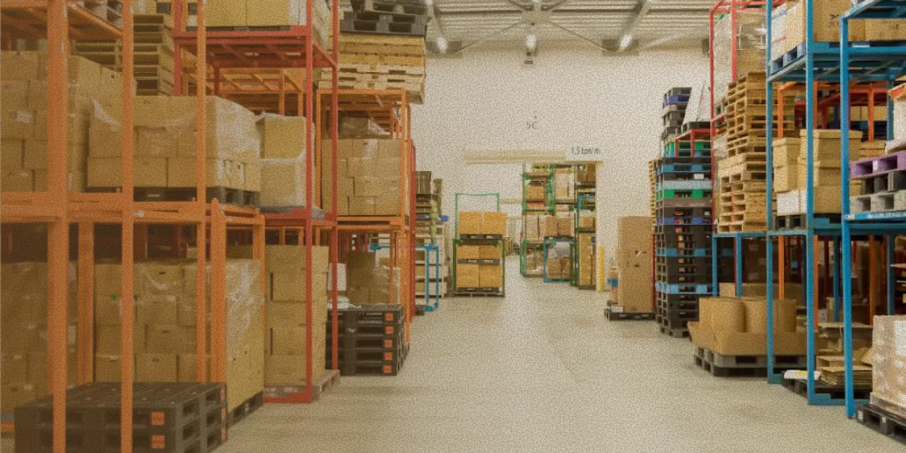
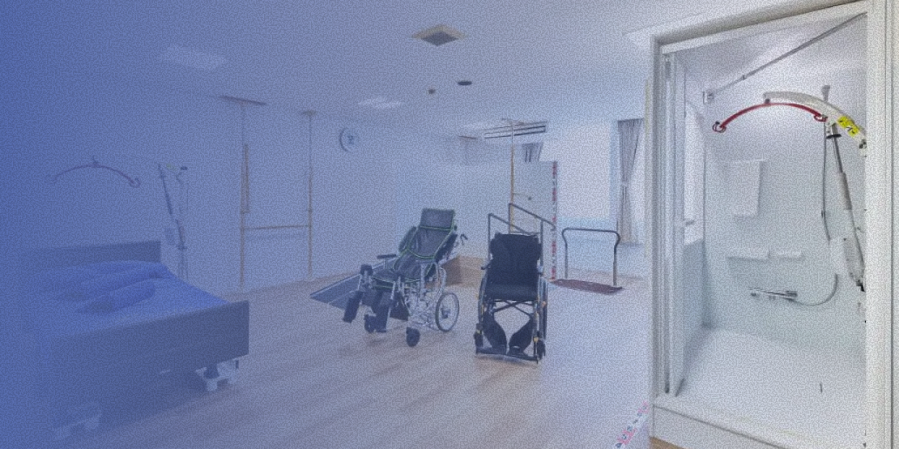
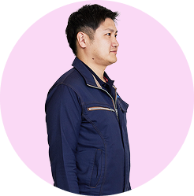
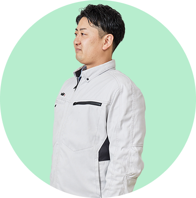

ABOUT
私たちについて
インフラって難しそう？
意外と、身近な仕事なんですよ。
インフラって難しそう？
意外と、身近な仕事なんですよ。
課題があるなら
やらない理由はないでしょう
SERVICES
事業領域
仮設事業
国内シェア１/３、全国１３０拠点。日本の“つくる”を支える、私たちの原点となる事業です。

物流事業
２兆円規模の物流市場で成長を続けています。モノの流れを止めない、物流を支える仕事です。

介護事業
急成長を続ける介護事業。福祉用具のレンタルと自社開発で、高齢化社会を支えています。
課題があるなら
やらない理由はないでしょう

VOICES
社員の声
日建リースの強みや働きがいを、
佐藤部長が現場社員に率直に聞きました。
“持たない”って、社会にとってどんな意味があると思う？
資源を無駄にしないことだと思います。必要なときに、必要な分だけ使う。それがサステナブルな社会につながると感じています。
建設現場で当たり前だった仕組みが、物流や介護にも広がっている。レンタルの考え方が、社会全体を支えていると実感します。
建設、物流、介護。これだけ広いと、違いも大きいよね？
建設で積み上げたノウハウがあるからこそ、物流や介護でも信頼していただけていると感じます。
仕事も大事だけど、無理はしてないか？
はい！リフレッシュ休暇で旅行に行きました。長期休暇も取りやすい雰囲気なのが嬉しいです。
オンとオフの切り替えがちゃんとできる会社だと思います。休むときは、しっかり休めます。
